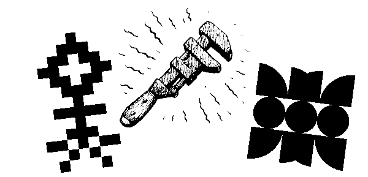
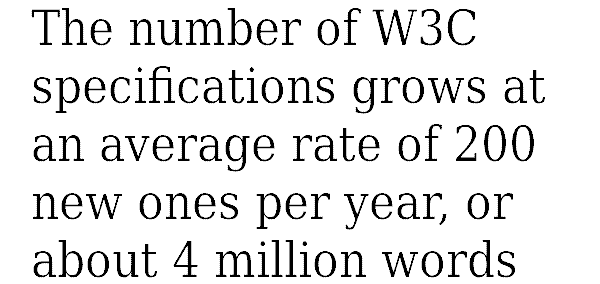
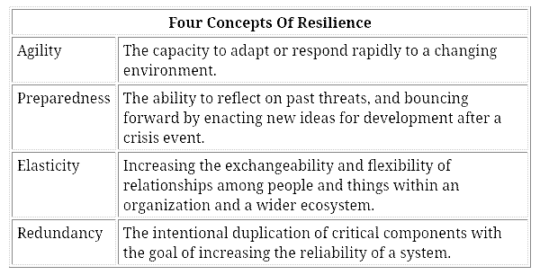
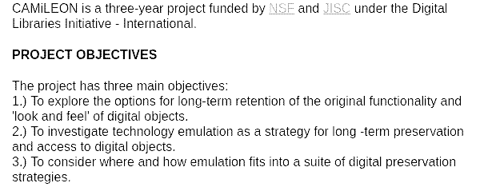
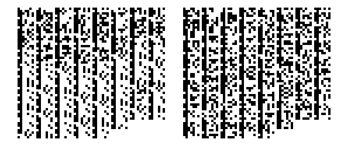
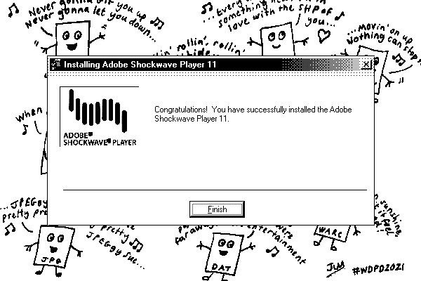
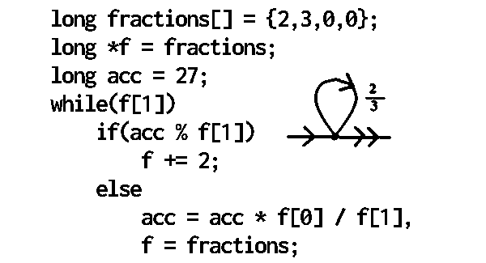

permacomputing 101
This is a blog post based on a transcript of a talk by Devine that took place on August 11th for Critical Signals 2025. Watch the video version on (YouTube). The slideshow presentation was made using Adelie.
Thank you Critical Signals for inviting me, I wish I could have been in Wellington to present it in person.
Permacomputing 101
I am one half of a little design studio called Hundred Rabbits, founded 10 years ago. Together, we also explore the failability of modern technology, working entirely from secondhand devices.
We operate aboard a 10 meters long sailboat built in 1982, named Pino. Our vessel is our workspace, habitat, gym, rec room, bedroom, and our kitchen. Our life is very much like camping all year long.
We sailed to New Zealand in 2017, by way of French Polynesia, Niue, Tonga. We stayed in Whangarei for 9 months — it was lovely!
We started sailing because we wanted to live that solarpunk life and to learn more about repair & maintenance. We wanted to move between places on our terms and according to seasons. The sailboat afforded us that flexibility. But going down that path came with a lot of challenges which, in turn, advised much of what I'm going to be covering in this article.
In a lot of ways, we've become anachronistic to modern life, we somehow diverged from the general direction of things.
To give you some a sense of the limits that we have aboard Pino, our studio is powered by two 100w solar panels which feed four 6v lead-acid batteries. We use this to power our laptops, the lights, and safety systems. In this post I'll talk about the limits, the complexity and appropriate technologies.
In this context, it is common to think that it is possible to engineer your way out of some problems by say, buying more batteries, which add more weight which in turn makes it makes it harder for us to run away from storms, or to buy more solar panels, which add more windage and increase the chances of violent breakages. Managing this complexity and these limitations is important, but if you have the inclination to always "buy more of X", it is likely to create more problems than it is going to solve.
I will try to explain some of the choices that we made and some of the conclusions that we reached.
When we began looking for spaces that still built tech that was compatible with our new way of life, we found that modern tech was aggressively at odds with it. A common assumption is that technology is welcoming to nomads, but always-online software, two-step verification, and the reliance on physical addresses create very difficult barriers, often forcing people like us to look for alternatives, work-arounds.
![a slide with text. 1. Problem. Over the last few hundred years of human civilization, there has been a dramatic increase in the consumption of artificially produced energy. In the overarching story, this is often equated with progress. In the computer world, this phenomenon gets multiplied by itself: progress facililats ever greater densities of data sotrage and digital logic, this dramatically exploding the availability of computing resources. Howver, the abundance has also caused an equivalent explosion in wastefulness, which shows in things like mindblowingly ridiculous hardware requirements for even quite trivial tasks. At the same time, computers have been failing their utopian expectations. Instead of amplifying the users' intellience, they rather amplify their stupidity. Instead of making it possible to scale down the resource requirements of the material world, they have instead become a major part of the problem. Instead of making the world more comprehensible, they rather add to its incomprehensibility. And they often even manage to become slower despite becoming faster.](../media/content/blog/per101_060.png)
While researching this, we found someone who highlighted some of the same pain points.
- Who still builds software that works well offline?
- Who still remembers how to write efficient programs?
- How far back in the past do we have look to find tools that we can use?
A few years back I found the original permacomputing article, written by an artist called Viznut(Ville-Matias Heikkilä), which articulated perfectly the problems that we were struggling with. Viznut wrote about the demoscene, ludism, digital aesthetics, as well as the environmental impact of technologies. His website had the sentence:
"I want to be among the builders of a better world-"
It was a pretty fresh vision of computation that was different from the prevalent futurism that is everywhere today. He wrote a first specification of permacomputing:
"It's a practice that encourages the maximization of hardware lifespan, minimization of energy usage, and focuses on the use of already available computational resources. It's about using computation only when it has a strengthening effect on ecosystems."
When I read this these two sentences, I thought it was such a lucid enunciation of the problems that we were facing. I immediately wanted to know more, I went digging to find out who was behind this and if there was a community of people interested in exploring what seemed to be the solution to our problem. We began gathering friends operating under similar constraints.
This line of research is what got us in touch with Julian who runs Collapsible Systems, a project that is another exploration of that space, with hyperlocal solutions to problems.
I would like to explain some of the ideas behind permacomputing. The way I see it, there are many ways of approaching this, but I've divided permacomputing into 3 stages of adaptation, relative to resource availability:
- Frugal computing
- Salvage computing
- Collapse computing
Each stage is a step further away from available power, internet hardware, and so on.
The definition of frugal computing would be to "utilize computational resources as finite, to be utilized only when necessary and as effectively as possible." I did not write this, but to explain it in my own words, it is about familiarizing yourself with using as little as needed while resources are available. Like learning to use a med kit, what is inside, how each item is used, while still living in the city. If you made a mistake you can course-correct. It's always better to prepare, to practice preparation when resources are available than when disaster strikes and correcting is no longer feasible.

Salvage computing is about "utilizing only already available computational resources to be limited by that which is already produced." Imagine the production treadmill has stalled and that what is produced is just more of what's already there.
Collapse computing is about "utilizing what has survived the collapse of industrial production or network infrastructure." At that point consumption consists of fighting over what's left, with most of what was already being produced decaying. It is more maintenance-focused because it is not possible to run to the market to get a replacement.
As we move through these three stages of adaptation, as the climate worsens and that technology is forced on people, computation is used increasingly as a tool of control. The further down the descent, the more technical things get. The more technology is something to be actively engaged with and understood, especially when it's forced upon people.
Permacomputation is a framework for navigating this environment where things might not be as reliable as they once were. You can phrase it as being a utopian ideal which requires doing a lot of rethinking, rebuilding, technological design and education to put into practice.
I don't mean to say that people have to start learning Assembly, there are many more proactive things to do first. It is also something that is better to be engaged in as a community rather than as an individual, so it is possible to leverage people's different skills.
The first things that anyone can do, doesn't have anything to do with Assembly, it doesn't even have anything to do with technological knowledge, is about the value of absence. It is about finding where technologies do not have a strengthening effect on the ecosystem, and on finding ways to do away with technologies that precipitate climate collapse.
It is about stopping the production of things that can't be repaired, to reduce technological waste, of getting rid of technologies that have a clearly antagonistic effect on ecosystems, and to sabotage them, if possible.
Self-obviation is an aspect of technology that tries to make itself less and less necessary to the realization of its purpose, and gradually allows people to provide for their own welfare.
A technology can't both make you dependent, and emancipate you. It's about asking "what happens to the tool once it leads you to your goal?" It teaches people the means to get to where they want to go instead of wedging itself between them. Self-obviation in terms of technology is something that people should strive for. It ought to become an engineering practice.
Permaculture, which is literally the first half of permacomputing, is about developing systems where nature does most of the work. Permaculture thrives in diversity, it's the load-balancing of that diversity that creates resilience. It's not about finding a silver bullet, there isn't a "most permacomputing technology." Permacomputing is always going to be diversity of tech, products and people. It's not going to try to develop a monoculture of a single crop for tackling a scale of problems.
The first question that permacomputing asks is "where is technology not appropriate? Where can it be removed?" In most cases, technology is sold as a timesaver, but it tends to do the opposite. It adds complexity while making people dependent on supply chains, usually turning into a tool of control by making the tool as opaque as possible, ensuring that people don't understand the tech that rules their lives.
They will make simple things appear as complicated as possible, and make complex things appear as simple as possible, while obfuscating their waste and byproducts so people have no idea what's going on. Identifying inappropriate tech, doing away with it, is a really good first take and requires very little knowledge of the intricacies of computation.
If we stop forcing computers down people's throats, and we find that we don't need computers anymore. There's definitely a case where a lot of people would be happier, their lives would be simpler, if computers were just not there and if they were not forced to use them.
But, we might also find that there's still a need for computers, as way of learning about the world, for games, for art, and for music, but once we identified where computation actually has a strengthening effect on the ecosystem, in most cases it will be used to do benign tasks. This is where permacomputing exists right now, it's in this space.
Obviously, when I say that people should understand the tools that they're dealing with, it's a sliding scale, right? What skills do people need to participate?
Having the option to reverse-engineer or repair a tool gives you leverage, it also allows you to repair something when it breaks. Again, if a community doesn't understand the inner workings of a tool they rely on, it becomes a tool of control. So what does it mean for people of variable degrees of skills when it comes to understanding their tools? They won't all have agency, not having that option makes it that they will never be able to emancipate anything...
Let's explore a few good practices, that range from engineering, to architecture, that focus on enpowering people.
The first one is designing for disassembly. Designing for disassembly encourages repair. The idea is that a product can be taken apart at the end of its life and each component can be reclaimed.
When it comes to hardware, designing things for disassembly would mean providing a manual or instructions for the assembly and disassembly of the product, using parts that are not proprietary in software. It means having access to the source files, the binary files, the full documentation so that people can understand what they're using and how it works.
That makes a ton of sense in a world that has spotty internet. We, Hundred Rabbits, don't have access to internet for lengths at a time, so we can't always do tech support for the tools that we make. People have to be able to disassemble them, find out how to solve their own problem. In some cases, when we have internet again we often see that people have reverse-engineered the thing, used the docs, and found ways to solve their problems without our interfering. Had we been available we would have helped, but giving people the option, having a tool still be usable even if something happens to us, is a pretty good tactic for fighting bitrot.
Another engineering practice that aligns with permacomputing is to design for encapsulation. It's a bit more abstract, but really what it means is to be able to replicate the environment of a product. You might not have the knowledge to understand how the product works, or know about its internals, but if you can replicate its environment it should behave the same way as it did before.
Software emulation, for example, recreates the mechanism of hardware. Running a piece of software that was made for the Classic Nintendo is a form of encapsulation. Encapsulation allows us to preserve a piece of software through time even though the source code is gone, even though we don't have access to its internals, the logic, and the design documents that made this artifact happen. We can still use it because its environment was replicated perfectly.
Encapsulation has different facets to it, let's break it down into four main tactics. The first one is migration.
Migration is converting a program from one operating system to the next. We'll use Word for Windows 95 as an example, when a new Word was made for Windows 98 the code was migrated from the 95 version. Most of the code, I'm pretty sure, was reused so we can call that a migration. Emulation is mimicking the behavior of older hardware. It's basically tricking old programs to think that they're running on their original platform. It's how we get to play video games from the past, but also it's how Nintendo keeps churning out new versions of their old games, they just change the "wrapper" around them.
Encapsulation straight up means containerizing. If you're familiar with Docker it's about replicating, recreating the capsule, the environment, in which the software ran in a more higher-level of thinking.
The last thing is called universal virtual computer, and that one is more like defining the axioms, the mathematics, or the logic systems of a program. It's about defining the program in abstract terms that will adapt to various ecosystems and that should transcend both hardware and software.
Making a universal virtual computer is the approach that we took as a studio to make sure that our software would keep running over time. As I mentioned, I'm pretty sure you have examples that pop into your head when I say this, but if you're a programmer you might think of Java. The JVM's tagline was something like "write once, run everywhere". It is a strategy to fight hardware obsolescence. I think that at that point they were already seeing that they would have to rewrite the same program over and over again, by targeting a virtual machine they were allowed to write the program once and to run it everywhere.
Is Java permacomputing? I mean, really, it's less about finding if something is permacomputing or not. That specific attribute of Java is appropriate for the situation, it's appropriate for fighting obsolescence. I can't say if Java is permacomputing or not, but that attribute, is.
You're probably watching this through Chrome or Firefox or something else, you might be thinking, well, browsers are another good example, right? A browser is similar to the JVM, it runs on all sorts of devices, but like virtual machines and encapsulation systems it doesn't solve the whole problem. With browsers, it usually comes at the cost of efficiency.
Web apps are super slow. Most websites do pretty simple things, but they consume maximum amount of energy and power — web browsers come with a whole swath of problems that are beyond the scope of this talk.
"Is the web browser permacomputing?" is something that comes up quite a bit. For one, only 2 companies can implement the web specification, and so that means the whole ecosystem has been captured by a handful of people.
And because building new web browsers today, the lens that nearly the entire world use to talk to each other, is unthinkable. The fragility of the web is due to it growing at such a logarithmic scale, making difficult for people to participate in the creation of new tools to browse the web, or for anyone to understand the tool. The bloat and corporate capture make the web somewhat at odds with permacomputing.
One misconception that people will often fall pray to when they recommend things to us, is that they don't want to halt the development of new tech because "aren't they getting faster and more efficient over time?" They might be more efficient, as in they do more work, but they will always use more energy
A lot of time people suggest technologies to us that are seemingly more efficient. They're more efficient at doing really complex things, which we don't do, but really inefficient in a way that makes it impossible for us to even run them on the battery power that we have.
I will tell you about one last little engineering tidbit, which is to design for descent, which translates to designing for something to degrade gracefully.
It's an engineering tactic that ensures that if the sound card of your computer fails it doesn't take down the whole ship with it, it is still possible to use the rest. It is making sure that if the internet slows down you can still use the tool, it is when it starts to take less energy when the power is low.
This ties to resilience. Resilience applies to much more than computation. I'll just walk through the four pillars of resilience:
Agility, Preparedness, Elasticity and Redundancy.
Agility defines the capacity to adapt and respond to a changing environment. For example, if something is too rigid then it will not be resilient. Preparedness means looking ahead, having a plan. Elasticity is having flexible requirements and needs for something to work properly. Redundancy is having a backup in case something fails — redundancy is extremely useful aboard a boat.
The permacomputing paper I shared earlier did not mark the creation of the concept of digital preservation, it has been a field of research for many years, although it did result in people rallying around the term "permacomputing".
The first mention of digital preservation that I found was PADI, a gathering of people in Australia who's focus was to explore that problem.
There is also Cedars, a UK digital preservation project, and CAMiLEON, a joint undertaking between universities in the USA and in the UK.
CAMiLEON's objectives could have been in the permacomputing paper as they are so tightly aligned. Their three main objectives are as follows:
- Their first objective is "to explore the options of long-term retention of the original functionality and look and feel of digital objects." Fancy words for saying "make software work tomorrow".
- Their second objective is "to investigate technology emulation as a strategy for long-term preservation and access of digital objects." This is what makes it possible today to run DOS games on your computer. They were exploring emulation as their tactic to preserve software.
- Their third objective is "to consider where and how emulation fits in a suit of digital preservation strategies." Like permacomputing, they didn't think that there would be a silver bullet, it is more about leveraging different tactics for maximum resilience.
Unfortunately, all these projects are now defunct, only available through The Internet Archive.
It doesn't speak well of attempts with access to funding and the means to explore this space, if just a few years later we can't see any of it any of it anymore. This is a common pattern when you start digging into this topic.
A classic example is the Domesday Project. In the 80's the BBC wanted to mark the 900th anniversary of a book called the Domesday book, which was a census of England written by monks in the 11th century. It's a big book that sits in a museum that few people have access to, and that is still readable today. In its honor, the BBC wanted to make a project that captured the 80's British way of life through music, videos, pictures and stories, which they encoded on big proprietary discs — they figured that the people of the future would have disc players.
By 2002, it was already hard to access because all of the drives were gone, and the people who had worked on the project retired and their work was largely undocumented.
CAMiLEON worked on figuring out how to get the data back, but this was a dawning realization that this is a fiendishly hard problem. The BBC had projects, specifications and plans, and today none of it remains.
Thankfully, there are outliers like the 1996 Space Jam movie website. It is still visible today, it still works and displays just the same as it did in 1996.
What can we learn from this? There seems to be a hard cut off of usable archived media and technology after the Commodore, Macintosh, DOS era. Somehow, it is easier to run a project made 40 years ago than it is to run something made 10 years ago.
That makes sense in a way, right? We now have a better understanding of how things worked back then. The reason permacomputing aesthetics seems like it is stuck in this bygone era is because permacomputing is about managing that complexity, and we probably don't have the tools today to manage the complexity of something that was made last year. But we do have something to manage the complexity of something that was made in the 80s, to emulate it, and to run it at a reliable speed.
If all of these organizations, all these explorations, research products, and these academics couldn't make it work, do we have any insight on what actually might actually work for doing this kind of preservation?
One thing that reliably works, is piracy.
Piracy has allowed games to survive when their authors have given up on migration or portability. There are ways to run games today through piracy that run a thousand times better than the wrappers and the official emulators made by their creators. A thousand times is not a number I made up, I tried running Age of Empire 2 through an emulator that replicated the hardware in which it was supposed to be run, and it was a thousand times faster than running the same game through the wrapper made by Microsoft. Piracy definitely has a role in this. A massively popular project will have an equally massive following that allows for this, there are more man hours, more people spending time to fix, understand, reverse-engineer, and document these projects.
"Can we plan ahead" is a question that I really like to think about, but to understand how to plan ahead I have to go way in the weeds here, but I think I found a way to explain it in a way that's interesting — I hope.
In the abstract, we can think of complexity in computation as "the distribution of chaos." To explain this in another way, on the slide below there are two lengths of text(2 strings):
If you were to write a program that generated this text, it would look like this:
def print_a():
print("42" * 12)
The length of the smallest program that can generate that length of text is a good indicator of the actual inherent complexity of that bit of data. With the OJMD4X text and so on, you can't infer or generate it by rules, you have to encode the whole thing and so the program to generate that bit of data becomes a bit longer.
In one example we have a small program, and in the other we have a bigger program. We can say that complexity, in the abstract, can be referenced to as "the length of the smallest program that can generate that bit of data."
I have a better example for this and it will just make this clearer. In the above image, on the left are the lyrics of the song I Am Blue by Eiffel65, and on the right are the lyrics of No Regrets by Aesop Rock. The entropy of one is bigger than the other.
If you've ever used a compression tool, like if you right-right click on a file and zip it, the compression algorithm in most cases is very much like exploring the complexity index of a bit of data, of any bit of data. If we were to compress I Am Blue by Eiffel65 using the exact same algorithm it ends up as 176 bytes, or 176 characters. For Aesop Rock's No Regrets, it's 348 bytes(characters). This means that No Regrets is almost twice as complex.
Complexity wise, this is something that exists across all media, not just with lyrics or songs. Here are 2 images, which is a binary representation of these same two songs.
In binary, a number 1 is a black pixel, and 0 is no pixels(or white pixel). The left is the binary representation of I Am blue by Eiffel65, in it we can see a repeating pattern. The eye will instantly notice that there's less chaos in this one than in the one on the right. This exists in audio, video and in any other type of data stream. You can start comparing songs, pictures, diagrams, symbols or flags, and notice how there are a few rules, a few axioms you can rely on to recreate that pattern or that logo or that design. This is an indication of complexity. When people talk about complexity in computation, that's exactly what they mean.
In the concrete though, complexity is something entirely different, it is how many lines of code that you need to migrate if you want to port your program. If you want to fix a program, the time that you will have to spend learning how a program works, the internal aspect of it, the line of codes, etc, is a pretty good indicator of the complexity of something, and in almost all cases the arrow goes up.

There's a saying with boats which aligns perfectly with software and hardware:
"Small boat, small problems. Big boats, big problems."
This is something that has been explored by a sailor called Roger Taylor who sails a little boat called Mingming, everything he writes about is fantastic. His whole thing is about safety through simple systems and resilience through redundancy and planning.
Resilience in computing consists of finding ways to manage this complexity. Preservation is like studying the artifacts and working backward, but designing for preservation is figuring out the simple primitives that will generate the complexity further down the road. If you manage this properly, it will lighten the load in the future.
An example I love of this is the Arecibo message, an interstellar radio message by Cornell University and Arecibo scientists that was beamed into space in 1974. They didn't know what the potential receivers' capabilities are, they don't know ASCII, they don't know English, etc. They couldn't make pictograms either, but even so, how do we go about sending pictograms through a radio signal? Engineering things with robustness in mind is necessary in scenarios such as this.
The Arecibo message team found a beautiful solution to this problem, by setting the length of the Arecibo message to 1679 bits(so just like before where we were looking at all the little bits for all the lyrics of 2 songs, where a 1 is a black pixel and a zero is a white pixel, there are 1679 bits.) The reason they chose that specific length for a message is that it is a semiprime. A semiprime is made of two other prime numbers. 1,679 can only be reached by multiplying 73 by 23, which gives the dimension of this image.
We can't know that aliens will have a base 10, or a base 20, or a base 400 numbering system, but we can be sure that if they have a technology to receive radio signals, they might have come across primes. Because primes are found in nature they might be able to decipher the message that we're sending them. That's a way of using robustness as a first design principle. The Arecibo message is a message without a header, it doesn't have a data format, it's just a bunch of bits.
Throughout the ages we've gone through a ton of file formats, some of them were more robust than others.
The more complex the file format, the more likely they will stop being supported in the future, and the more interactive the multimedia, the harder it is to preserve.

The complexity of the Domesday book BBC project was pretty high because it consisted of music, video and all that, but it's even harder and more complex to maintain if the goal is to preserve a specification for an entire computer. Some people did explore this fascinating space, but despite all of the knowledge available out there, why it is that someone hasn't yet created the perfect computer system that will preserve things in the future indefinitely?
In the 4 approaches of encapsulation, the last one is the UVM. The UVM is the idea of specifying a computer that will be so simple, that would be so close to the rules of nature, or that can be specified in so few words, that it has, through sheer ease of portability, a chance of surviving.
In theory writing software, or writing anything that would work and be decompiled or deciphered through a system like this would be the easiest, but it's always a trade-off. You're always balancing this trifecta of portability: A system as small as this one here is portable because it's easy to migrate, it's resilient because the specification fits on a napkin, but it's very slow because it does atomic operations that can't utilize the system's hardware.
You're always shifting this irreducible complexity, not doing any headway. Most systems that were designed for archival and long-term preservation are just not used because they're so inefficient. Humanity is in this middle space, where we're exploring the boundaries between suffocating minimalism and unsustainable maximalism.
Computation is about managing state, and the vast number of permutations that a specific length of memory can take. At this point we're increasingly diving faster and faster into larger and bigger universes of state and we've not even begun to to explore the one that we have just left. Permacomputation is an invitation to slow down, to make sense of where we are, and to explore what's possible with what's already here to prepare for what could happen. It's an invitation to participate and to learn to control tools so that they don't control us.
I hope that I've inspired you to become interested in exploring what could help make computers last a bit longer.
Thank you for reading. If you want more content like this, consider reading weathering software winter, shining sand, and computing and sustainability.